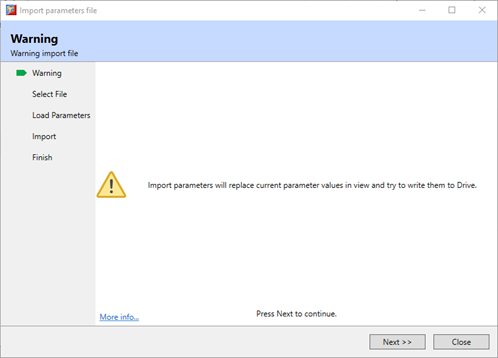
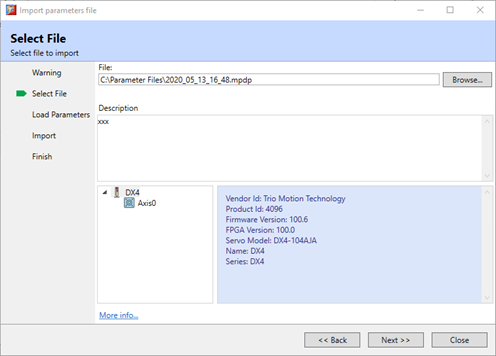
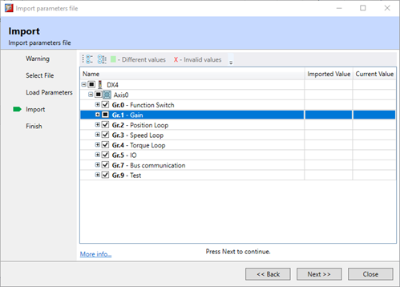
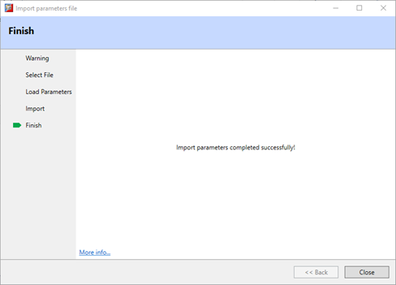

EtherCAT Drive Import Parameters
Import Parameters is step-by-step import wizard which allow
full or partial parameter set update from a file.
The wizard sequence is:
-
Warning, this will overwrite the existing setup of
the drive, be sure that the existing setup is saved, if required.

-
Select File, browse PC for a parameter file to
import

-
Review parameters, select and review the parmeters
that will be included in the import. Partial import is supported and
items can be selected down to individual parameter granularity.

-
Finish, final screen to show status of import
